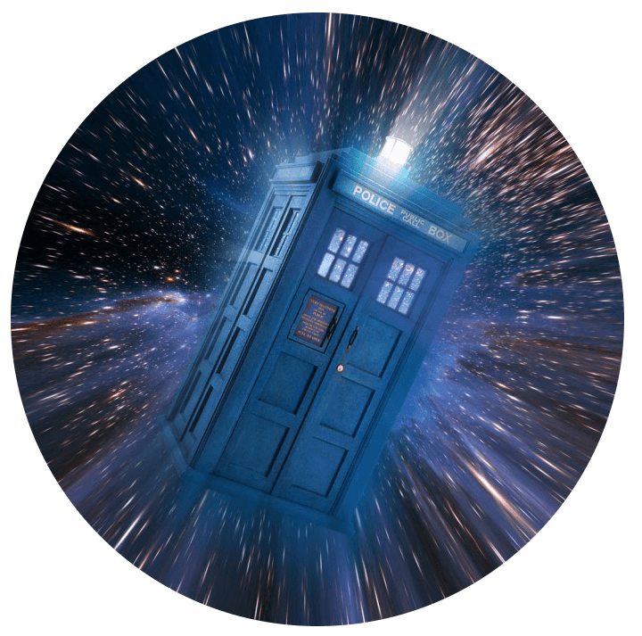

Главная
Многие из нас хоть раз в жизни задумывались: "Можно ли вернуться в прошлое или пережить свою жизнь по-другому? А можно ли отправиться в будущее на машине времени?". На протяжении многих лет люди представляли себе путешествия во времени и воплощали свои идем в литературных произведениях, кинофильмах, играх и т.д. Ученые разных стран пытаются доказать существование путешествий во времени при помощи различных гипотез и предположений, но на данный момент наука официально не подтвердила возможность создания машины времени и путешествий в прошлое или будущее. На данный момент мы можем лишь гадать о загадачной природе пространства времени, а также наслаждаться многими художественными произведениями.
На данном сайте я привел различную информацию, чтобы у Вас сложилось опреденное мнение о путешествиях во времени, о перспективах развития этой идеи, а также различных отражений ее в культуре
Приятного просмотра!